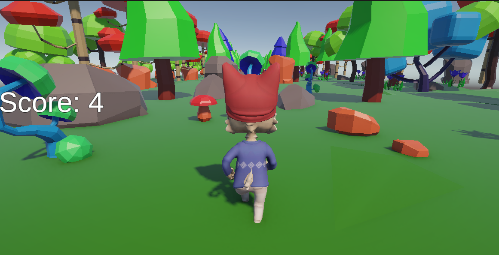
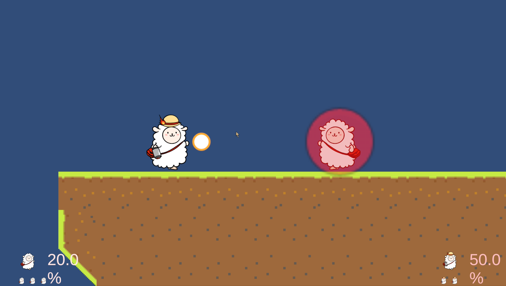
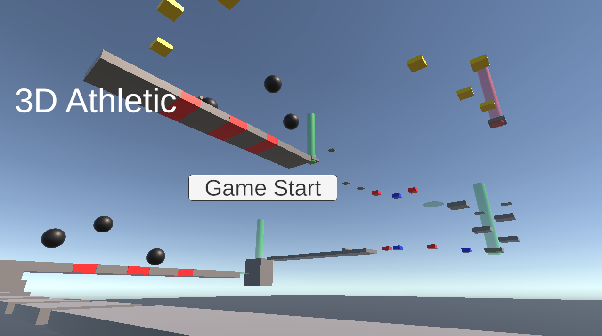
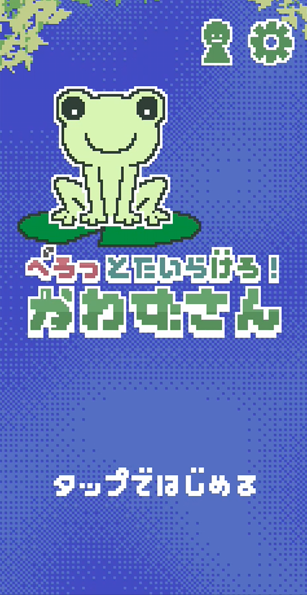
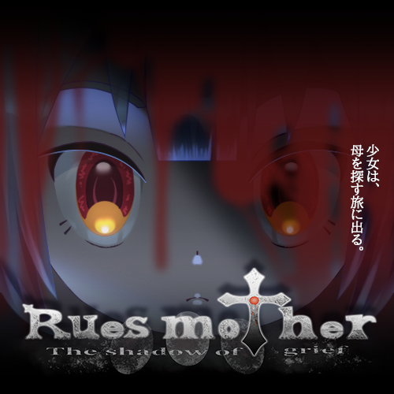

3D Infinite Runner

個人制作｜3Dランゲーム
ゲームプログラマーを目指す学生の作品集
UnityとC#を用いたゲーム開発に取り組んでいる学生です。 個人制作とチーム制作の両方を経験し、 ゲームの企画・実装から、遊びやすさを意識したUI制作まで 幅広く取り組んでいます。
個人制作では、プレイヤーの操作やゲーム進行の管理、 UI・演出など、ゲームを構成するさまざまな機能を実装してきました。 チーム制作では、自分の担当機能を実装するだけでなく、 GitHubを利用した共同開発にも取り組んでいます。
このポートフォリオでは、これまでに制作したゲームと、 実装した機能や開発で工夫した点を紹介します。

個人制作｜3Dランゲーム

個人制作｜オンライン対戦アクション

個人制作｜3Dアクション

3人チーム制作｜ゲームジャム作品

2人チーム制作
GitHub： https://github.com/nasu-cell
UnityRoom： https://unityroom.com/users/nasu-cell